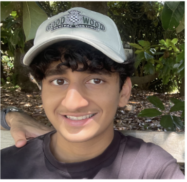
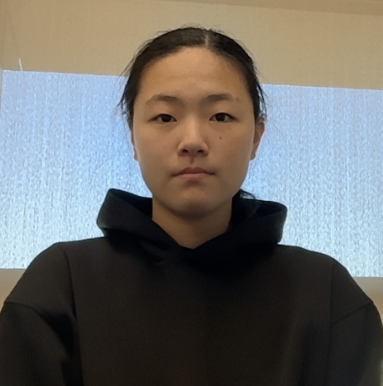

Faculty photo
Faculty Advisor
Person Name
Add a short biography, research background, or role description here.
Lab members
Meet the people supporting student research, project development, and collaborative lab work.
Faculty Advisor
Add a short biography, research background, or role description here.
Principal Investigator
Add a short biography, research background, or role description here.
Research Mentor
Add a short biography, research background, or role description here.
Student Researcher
Charlie is a senior at Fulton Science Academy. His current research includes experimenting with iPSC-derived neuron models in MEA platforms and studying neuron synaptogenesis mechanisms. His interests include software-automated testing and experimentation to investigate the limits of brain-on-chip model capabilities, with the long-term goal of supporting in vivo brain organoid brain-on-chip research.

Student Researcher
Sulayman is a senior at Troy High School in Michigan. His interests include biomedical engineering, dermatology and epidemiology research, and documenting his creative journey online. His current research explores robotics in life science settings, including autonomous lab robotics, hygiene cobot design, and drug-discovery workflows.
Student Researcher
Mukund is a senior at Fulton Science Academy. His interests include game development, astrophotography, and model rocketry. He is currently working on bridging software with biological wetware research. More specifically, changing neuron deep neural training from traditional methods to more novel platforms in order to better communicate the game world environments to help neurons achieve complex goals.

Student Researcher
Keyi is a senior at Lynbrook High School. Her interests include biology and computer science/engineering. She is currently researching agentic AI systems, specifically how autonomous agents can use reasoning, memory, and tool use to solve complex programming and robotics tasks.
iGEM Member
Add a short description of this member’s role, project work, or interests.
iGEM Member
Add a short description of this member’s role, project work, or interests.
iGEM Member
Add a short description of this member’s role, project work, or interests.